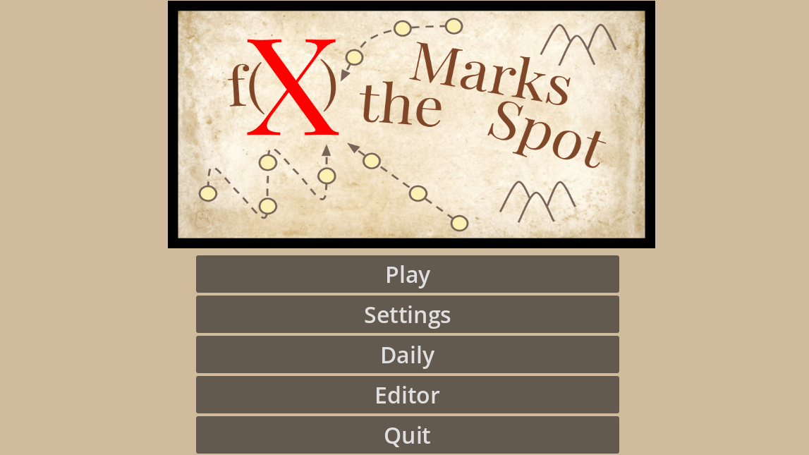
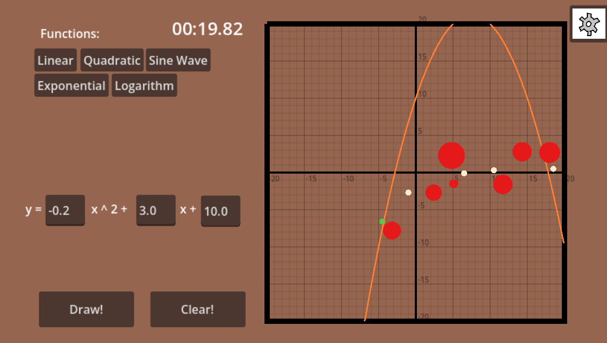

f(x) Marks the Spot
A graphing game made for Jam-O-Lantern 2026
Screenshots


Notes
Recently, I've been playing a lot of daily games, like worldle or the krillion, so when the jam had the theme of "point of no return", and my thoughts immediately went to points on a function, I wanted to merge my passions of math and daily games and make a graphing game incorporating both of these.
I decided to add structured functions to minimize the complexity of the graphing and point collision algorithms. In the future, if I continued with the game, I would try to make an input that parses an equation through RegEx.
This project was a solo project originially, but during level design, I decided I wanted to involve as many of my friends as possible into the process. I was able to get 10 of them to make levels for my game, and I incorporated those into the core gameplay.
Overall, I am very proud of the project. Even though there is no ratings for the jam, I still think it would do well with the math fans, which there should be a lot of :), and I would still play it every day. The game functions as not only a game, but also a teaching tool, letting curious minds learn about different function behavior. Even I learned new things about functions, such as the logarithm of x^2 being positive and negative.